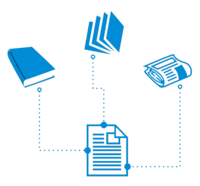

Referências Bibliográficas
Home
Tecnologias Sustentáveis
Carros Elétricos
Geração Distribuída
Blockchain
Internet das Coisas
Referências Bibliográficas
Autores das Pesquisas
Fale Conosco

Referências de Pesquisas
Links
Descrição
https://blog.waycarbon.com/2017/08/tecnologia-sustentavel-desenvolvimento/
Tecnologias Sustentáveis
https://www.youtube.com/watch?v=c4AifeO-Ssw
Tecnologia sustentável: novo modelo de desenvolvimento.
https://www.youtube.com/watch?v=pZ2RsinirlA
Dimensões do Desenvolvimento Sustentável
https://exame.abril.com.br/negocios/dino/internet-das-coisas-a-importancia-dos-estudos-do-brasil-no-segmento/
Importância da IoT no Brasil.
https://computerworld.com.br/2019/01/15/internet-das-coisas-e-desafio-para-industria-brasileira/
IoT desafio da indústria brasileira.
https://epocanegocios.globo.com/Tecnologia/noticia/2019/03/conheca-6-aplicacoes-da-internet-das-coisas-que-ja-estao-tornando-o-mundo-melhor.html
6 Aplicações IoT
http://www.aneel.gov.br/geracao-distribuida
Geração Distribuída
https://www.todamateria.com.br/sustentabilidade/
Sustentabilidade
https://www.pensamentoverde.com.br/sustentabilidade/a-sustentabilidade-do-carro-eletrico/
Sestent. Dos Carros Elétricos
https://carroeletrico.com.br/blog/sustentabilidade/
Carros Elétricos e Sustentabilidade
Copyright © 2019 by
Pesquisadores
Facebook
/
Universidade